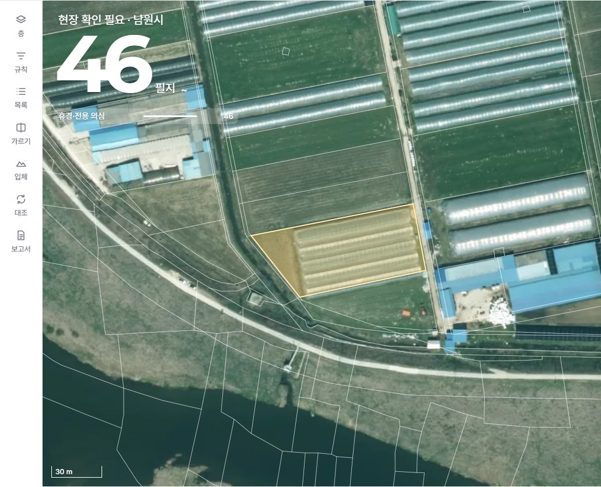

네 가지의 자리 — 각 두세 안
기준은 공무원이 실제로 쓰는 순서: ① 결과 보기 → ② 확인 · 메모 → ③ 보고 · 내려받기. 메뉴는 구조 2차(내 서비스 · 요청하기 · 기관 정보 · 계정 / 서비스 탭 현황 · 결과 지도 · 필지 목록 · 이력 · 통계·보고서)1. 결과 설명
무엇을 · 언제 찍은 영상으로 · 얼마나 믿을 만한가 — ① 결과 보기 단계에 필요ⓐ 현황 카드 + 지도 카드 추천
남원 GV영농관리 행정서비스
내 서비스요청하기계정
현황결과 지도이력통계·보고서

보고 있는 결과2판 · 2025년 드론영상
2,098필지 · 보통
2,098필지 · 보통
이 결과는판정한 필지 2,0982025년 드론영상 · 06.08 분석믿을 만한 정도 보통자세히 →
- 서비스를 열면 큰 숫자 옆에서 바로, 지도를 보는 중에도 그 자리에서
- 같은 세 줄을 두 곳에(한 출처) — 자세한 여섯 칸은 '자세히' 서랍
- 단점: 두 곳이라 글이 길어지면 안 됨(세 줄로 고정)
ⓑ 결과 지도 옆 패널만
남원 GV영농관리 행정서비스
내 서비스요청하기계정
현황결과 지도이력통계·보고서

이 결과 설명2판 · 2025년 드론영상 · 06.08 분석
2,098필지 · 믿을 만한 정도 보통
어디 · 어떤 형식 · 판 기록
2,098필지 · 믿을 만한 정도 보통
어디 · 어떤 형식 · 판 기록
- 한 곳 — 지도를 보는 사람에게 가장 가까움
- 단점: 현황만 보고 보고서를 쓰는 사람은 설명을 못 봄 · 지도 위 긴 글은 지도를 가림
ⓒ '결과 자료' 탭 하나
남원 GV영농관리 행정서비스
내 서비스요청하기계정
현황결과 지도결과 자료통계·보고서
이 결과 설명2판 · 2025년 드론영상 · 2,098필지 · 보통 · 어디 · 형식 · 판 기록
지도 파일필지 엑셀요약
이력09.29 확인 기록 6건 · 09.26 2판 공개 …
- ③ 보고 단계에 한 번에 — 설명 · 파일 · 이력이 한 탭
- 단점: ① 결과 보기 단계엔 멀고, 이력 탭과 겹쳐 탭 뜻이 흐려짐
2. 내려받기
지도 파일 · 필지 엑셀 · 요약 · 보고서 — ③ 보고 · 내려받기 단계ⓐ 통계·보고서 탭 한 곳 추천
남원 GV영농관리 행정서비스
내 서비스요청하기계정
현황결과 지도이력통계·보고서
읍면별운봉읍 152 · 송동면 100 · 아영면 91 …월별 확인 기록
보고서 · 자료
보고서 만들기
필지 엑셀지도 파일
요약
- 보고서를 쓰는 자리에 통계와 파일이 함께 — 순서 ③과 맞음
- 지도 카드의 '내려받기'는 이 탭으로 이동(한 줄기)
- 단점: 지도만 보고 파일을 받으려면 탭 하나 이동
ⓑ 현황 카드 아래 + 지도 카드
남원 GV영농관리 행정서비스
내 서비스요청하기계정
현황결과 지도이력통계·보고서
보고 있는 결과내려받기 →
이 결과는2,098필지 · 보통
지도 파일엑셀요약
- 결과를 보자마자 받을 수 있음(설계 8차 시안)
- 단점: 현황 카드가 무거워지고, 보고서 만들기와 떨어져 두 곳
ⓒ 결과 지도에서만
남원 GV영농관리 행정서비스
내 서비스요청하기계정
현황결과 지도이력통계·보고서
보고 있는 결과지도 파일 · 필지 엑셀 · 요약
- 한 곳, 지도와 함께
- 단점: 보고서 만들기와 떨어지고, 보고 담당자는 지도를 열 일이 적음
3. 새 결과 알림
새 판 · 검토 답 · 요청 결과 — 공무원은 매일 들어오지 않는다ⓐ 머리의 종 하나 + 내 서비스 띠
남원 GV남원시 GeoVision 플랫폼
내 서비스요청하기계정
1
알림 1도로 안전관리 결과 설명서 1판 · 10.01
내 서비스
새 알림 1 — 도로 안전관리 설명서 1판
영농관리
생활환경
도로 안전관리
- 어느 화면에 있든 같은 자리 · 들어오면 띠로 한 번 더
- 단점: 들어와야만 안다
ⓑ 종 + 메일 한 줄 추천
남원 GV남원시 GeoVision 플랫폼
내 서비스요청하기계정
1
내 서비스
새 알림 1 — 도로 안전관리 설명서 1판
✉ 메일 — [남원시 GeoVision] 도로 안전관리 서비스 결과 설명서 1판이 열렸습니다본문 한 줄 + 열어 보기 주소 · 2차 인증 아님(원칙 89) · 계정에서 끄기 가능
- 들어오지 않아도 안다 — 결과 · 답이 오면 메일 한 줄
- 메일은 알림에만 쓴다(원칙 89) · 계정 화면에서 끌 수 있게
- 단점: 메일 발송 설정이 필요(정식 오픈 때 LX 메일 서버)
ⓒ 서비스 카드에 점만
남원 GV남원시 GeoVision 플랫폼
내 서비스요청하기계정
내 서비스
영농관리
생활환경
도로 안전관리 ● 새 설명서
- 가장 조용함 — 카드에 점 하나
- 단점: 검토 답 · 요청 결과처럼 서비스 밖 알림을 둘 곳이 없음
4. 부서 배정
어느 부서(사람)가 어느 서비스를 보나 — 기관 관리자가 정함 · 기관 정보의 '담당자 표'는 없앰(기관-7)ⓐ 계정 화면 — 사람마다 볼 서비스 추천
남원 GV남원시 GeoVision 플랫폼
내 서비스요청하기계정
계정
| 사람 | 부서 | 볼 수 있는 서비스 |
|---|---|---|
| 박서연 | 농정과 | 영농 생활 도로 |
| 최민재 | 환경과 | 영농 생활 도로 |
| 이수진 | 정보화담당관 | 기관 관리자 — 모두 |
- 계정을 만들 때 부서와 함께 한 번에 — 사람 중심이라 전보 · 겸직에 맞춤
- '내 정보는 본인이 고친다'(원칙 105)와 어울림 — 볼 서비스만 관리자가
- 단점: 사람이 많으면 표가 길어짐
ⓑ 기관 정보 — 서비스마다 보는 부서
남원 GV남원시 GeoVision 플랫폼
내 서비스요청하기기관 정보
기관 정보
| 서비스 | 보는 부서 |
|---|---|
| 영농관리 | 농정과 ▾ |
| 생활환경 | 환경과 ▾ |
| 도로 안전관리 | 건설과 ▾ |
- 서비스 수만큼만 — 짧음
- 단점: 부서 안 모두가 보게 되고, 기관 정보에 또 표가 생김(기관-7과 어긋남)
ⓒ 배정 없음 — 모두가 모든 서비스
남원 GV남원시 GeoVision 플랫폼
내 서비스요청하기계정
내 서비스
영농관리
생활환경
도로 안전관리
- 관리할 것이 없음
- 단점: '부서는 자기 업무 서비스만'(원칙 38)과 어긋남 · 확인 결과를 다른 부서가 적을 수 있음